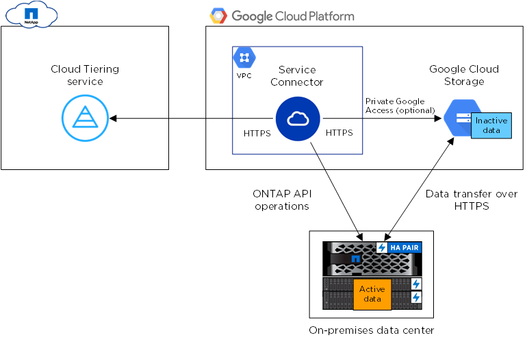

Preparing to tier inactive data to Google Cloud Storage
Contributors
 Download PDF of this page
Download PDF of this page
Before you start tiering data, verify support for your ONTAP cluster, provide the required permissions, and set up your networking.
The following image shows each component and the connections that you need to prepare between them:

| Communication between the Service Connector and Google Cloud Storage is for object storage setup only. |
Preparing your ONTAP clusters
Your ONTAP clusters must meet the following requirements when tiering data to Google Cloud Storage.
- Supported ONTAP platforms
-
Cloud Tiering supports AFF systems and all-SSD aggregates on FAS systems.
- Supported ONTAP versions
-
ONTAP 9.6 or later
- Cluster networking requirements
-
-
The ONTAP cluster initiates an HTTPS connection over port 443 to Google Cloud Storage.
ONTAP reads and writes data to and from object storage. The object storage never initiates, it just responds.
Although a Google Cloud Interconnect provides better performance and lower data transfer charges, it is not required between the ONTAP cluster and Google Cloud Storage. Because performance is significantly better when using Google Cloud Interconnect, doing so is the recommended best practice.
-
An inbound connection is required from the NetApp Service Connector, which resides in an Google Cloud Platform VPC.
A connection between the cluster and the Cloud Tiering service is not required.
-
An intercluster LIF is required on each ONTAP node that hosts tiered volumes. The LIF must be associated with the IPspace that ONTAP should use to connect to object storage.
IPspaces enable network traffic segregation, allowing for separation of client traffic for privacy and security. Learn more about IPspaces.
When you set up data tiering, Cloud Tiering prompts you for the IPspace to use. You should choose the IPspace that each LIF is associated with. That might be the "Default" IPspace or a custom IPspace that you created.
-
- Supported volumes and aggregates
-
The total number of volumes that Cloud Tiering can tier might be less than the number of volumes on your ONTAP system. That’s because volumes can’t be tiered from some aggregates. For example, you can’t tier data from SnapLock volumes or from MetroCluster configurations. Refer to ONTAP documentation for functionality or features not supported by FabricPool.
| Cloud Tiering supports FlexGroup volumes. Setup works the same as any other volume. |
Preparing to deploy the Service Connector in GCP
The Service Connector is NetApp software that communicates with your ONTAP clusters. Cloud Tiering guides you through the process of deploying the Service Connector on a GCP virtual machine instance.
A few steps are required before you can deploy the Service Connector in GCP. You’ll need to provide the required permissions, set up a service account, and set up your networking.
It’s important to note that Cloud Tiering tiers data to a Google Cloud bucket that resides in the same project as the Service Connector. So be sure to complete these steps in the project where both the Service Connector and bucket should reside.
Setting up GCP permissions
Ensure that your GCP user has the required permissions to deploy the NetApp Service Connector in a Google Cloud Platform VPC. You also need to enable a few APIs in the project.
-
Ensure that the GCP user who deploys the Service Connector has the permissions in the Cloud Central policy for GCP.
You can create a custom role using the YAML file and then attach it to the user. You’ll need to use the gcloud command line to create the role.
-
Enable the following Google Cloud APIs in your project:
-
Cloud Deployment Manager V2 API
-
Cloud Resource Manager API
-
Compute Engine API
-
The GCP user now has the permissions required to deploy the Service Connector in GCP from Cloud Tiering.
Setting up a service account
When you deploy the Service Connector from Cloud Tiering, you need to select a service account to associate with the VM instance. This service account needs specific permissions to enable management of tiering.
-
Create a role in GCP that includes the permissions defined in the Service Connector policy for GCP.
You’ll need to use the gcloud command line to create the role.
-
Create a GCP service account and apply the custom role that you just created.
Setting up GCP networking
Cloud Tiering prompts you for the VPC where the Service Connector should be deployed. Make sure that the VPC provides the required networking connections.
-
Identify a VPC for the Service Connector that enables the following connections:
-
An outbound internet connection to the Cloud Tiering service over port 443 (HTTPS)
-
An HTTPS connection over port 443 to Google Cloud Storage
-
An HTTPS connection over port 443 to your ONTAP clusters
Cloud Tiering enables you to deploy the virtual machine with a public IP address and you can configure it to use your own proxy server.
You don’t need to create your own firewall rules for the instance because Cloud Tiering can do that for you. The firewall rules that Cloud Tiering creates allows inbound connectivity over HTTP, HTTPS, and SSH. Outbound connectivity is open.
-
-
Optional: Enable Private Google Access on the subnet where you plan to deploy the Service Connector.
Private Google Access is recommended if you have a direct connection from your ONTAP cluster to the VPC and you want communication between the Service Connector and Google Cloud Storage to stay in your virtual private network. Note that Private Google Access works with VM instances that have only internal (private) IP addresses (no external IP addresses).
Preparing Google Cloud Storage for data tiering
When you set up tiering, you need to provide Cloud Tiering with storage access keys for a service account that has Storage Admin permissions. A service account enables Cloud Tiering to authenticate and access Cloud Storage buckets used for data tiering. The keys are required so that Google Cloud Storage knows who is making the request.
-
Create a service account that has the predefined Storage Admin role.
-
Go to GCP Storage Settings and create access keys for the service account:
-
Select a project, and click Interoperability. If you haven’t already done so, click Enable interoperability access.
-
Under Access keys for service accounts, click Create a key for a service account, select the service account that you just created, and click Create Key.
You’ll need to enter the keys in Cloud Tiering later when you set up tiering.
-
 Edit on GitHub
Edit on GitHub